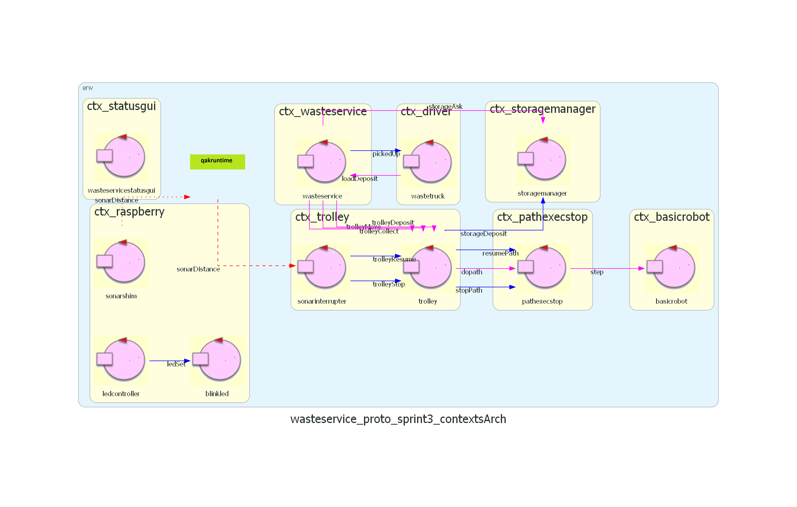
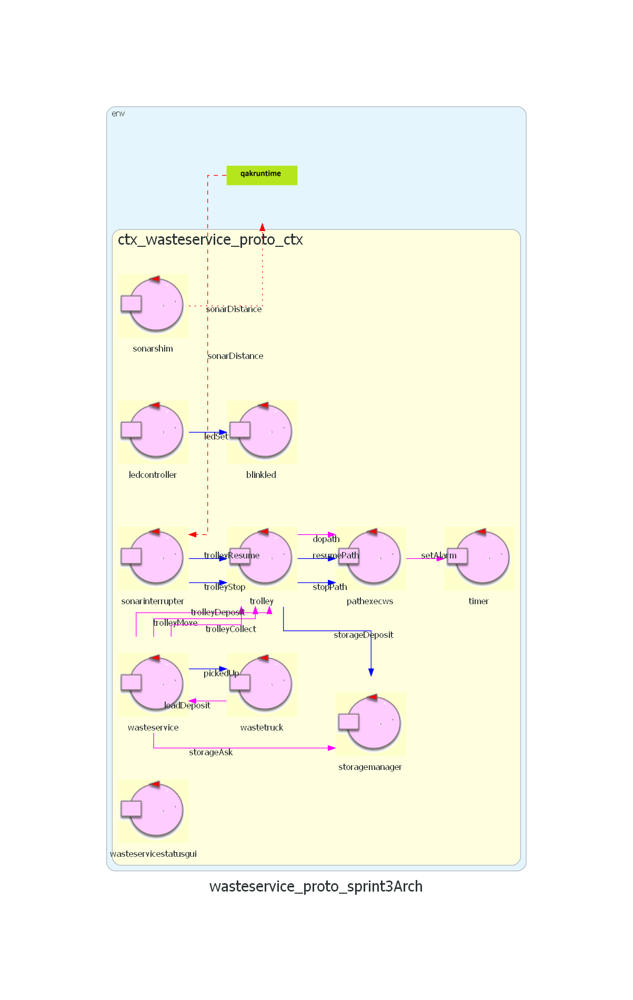

Sprint 3
Indice
Requirements
A company intends to build a WasteService for the separate collection of waste, composed of a set of elements:
-
a service area (rectangular, flat) that includes:
-
an INDOOR port, to enter waste material
-
a PlasticBox container, devoted to store objects made of plastic, upto MAXPB kg of material.
-
a GlassBox container, devoted to store objects made of glass, upto MAXGB kg of material.
The service area is free from internal obstacles, as shown in the following picture:

-
-
a DDR robot working as a transport trolley, that is intially situated in its HOME location. The transport trolley has the form of a square of side length RD.
The transport trolley is used to performa a deposit action that consists in the following phases:
-
pick up a waste-load from a Waste truck located on the INDOOR
-
go from the INDOOR to the proper waste container
-
deposit the waste-load in the container
-
-
a Service-manager (an human being) which supervises the state of the service-area by using a WasteServiceStatusGUI.
-
a Sonar and a Led connected to a RaspnerryPi. The Led is used as a warning devices, according to the following scheme:
-
the Led is off when the transport trolley is at HOME
-
the Led blinks while the transport trolley is moving
-
the Led is on when transport trolley is stopped.
The Sonar is used as an ‘alarm device’: when it measures a distance less that a prefixed value DLIMT, the transport trolley must be stopped. It will be resumed when Sonar detects again a distance higher than DLIMT.
-
TFRequirements
The main goal of the WasteService software is to allow a Waste truck to deposit its load of TruckLoad kg plastic or glass in the proper container.
The global story can be described as follows:
-
The Waste truck driver approaches the INDOOR and sends (using a smart device) a request to store the load, by specifyng the type of the material (plastic or glass) and its TruckLoad.
-
The WasteService sends the answer loadaccept if the final content of proper container will not surpass the maximum value allowed (MAXPB or MAXGB). Otherwise, it sends the answer loadrejecetd and the Waste truck leaves the INDOOR area.
-
When the load is accepted, the transport trolley reaches the INDOOR, picks up the material, goes to the proper container and settles the material. During this activity, the WasteService blinks the Led
-
When the deposit action is terminated, the transport trolley excutes another deposit command (if any) or returns to its HOME.
The WasteService must create a WasteServiceStatusGUI that shows to the Service-manager:
-
the current state of the transport trolley and it position in the room
-
the current weigth of the material stored in the two waste-containers
-
the current state of the Led
Analisi dei Requisiti
Per il requisito sonar-stop è stato incluso un modello eseguibile in Qak.
Requisiti e chiarimenti
-
request: il WasteService accetta richieste di deposito da Waste truck che arrivano nella zona specificata come INDOOR, che specificicano il tipo di materiale da depositare
- il sistema può controllare se c'è spazio per un certo materiale: accetta (risposta loadaccept), e rifiuta (risposta loadrejected) le richieste di deposito in caso contrario
-
Domanda: le richieste possono essere gestite anche mentre il robot è in attività?
Sì, potrebbe arrivare altro camion che chiede.
-
Domanda: solo un camion alla volta in INDOOR?
Sì.
-
deposit: il trolley, quando viene attivato, raccoglie i materiali a INDOOR, e li deposita, in base al tipo, in GLASS BOX o PLASTIC BOX; questa è una deposit action:
- Raccolta di rifiuti da Waste truck in INDOOR
- Andare da INDOOR a contenitore rifiuti (* BOX)
- Depositare rifiuti nel contenitore
-
indoor-more-requests: il trolley, terminata una deposit action, torna a HOME solo se non ci sono altre richieste da gestire, sennò gestisce subito la richiesta successiva andando a INDOOR
-
led: nel sistema è presente un led che:
- è acceso se il trolley è a HOME
- lampeggia se il trolley è in attività
- è spento se il trolley è in stato di stop
-
sonar-stop: è presente un sonar che, se misura una distanza sotto DLIMIT (valore prefissato), mette il trolley in stato di stop fino a che la distanza non torna a DLIMIT, nel qual caso il trolley riparte
-
Domanda: cosa vuol dire precisamente stop? Torna a HOME o rimane lì?
Si ferma e basta.
-
-
gui: è presente una gui (WasteServiceStatusGUI) che mostra i seguenti dati:
- Stato del trolley e sua posizione
-
Domanda: Posizione del trolley: deve essere precisa o informazione più generale (INDOOR, in mezzo, HOME, ecc)?
Basta una posizione più generale.
- Carico depositato attuale (in kg)
- Stato del Led (acceso/spento/lampeggiante)
In questo terzo SPRINT verrà analizzato il requisito rimanente di sonar-stop.
Glossario
-
WasteService: il servizio centrale che risponde alle richieste dei waste truck
-
Waste truck: i camion che arrivano dall'esterno a depositare rifiuti
-
Area di servizio: INDOOR, PlasticBox, GlassBox, aree definite nella creazione del sistema e punti di riferimento per il trolley. In particolare:
- INDOOR: area dove i waste truck si fermano a lasciare il proprio carico, facendo una richiesta di deposito. Essa può contenere un waste truck alla volta
- PlasticBox: area dove depositare la plastica
- GlassBox: area dove depositare il vetro
-
transport trolley (o trolley): robot DDR (differential drive robot), di dimensione approssimabile a quadrato di lato RD, usato per trasportare i rifiuti nel sistema
-
Service-manager: umano che supervisiona il sistema tramite la WasteServiceStatusGUI
-
Sonar: sensore che misura distanza
-
Led: spia luminosa
Analisi dei requisiti
Analisi sonar-stop
La lettura dei valori del sonar verranno fatti tramite software fornito dal committente, SonarAlone.c.
Dai requisiti sono stati individuati due principali messaggi, trolleyStop e trolleyResume, che fermeranno il trolley o lo faranno uscire dallo stato di stop.
Il componente avrà bisogno di comunicare con il resto del sistema, quindi dovrà essere un attore.
Il tipo di comunicazione con il resto del sistema deve essere definito, incluso il tipo di messaggio costituito da trolleyStop e trolleyResume.
Test plan sonar-stop. Viene incluso un test plan in Kotlin con JUnit, attualmente non eseguibile mancando un sonar pilotabile.
Materiale fornito dal committente
-
Robot DDR: viene fornita una componente software, BasicRobot22, che implementa comandi primitivi MOVE = w | s | l | r | h, e permette di fare step in avanti per un certo tempo.
-
Sonar: viene fornito un programma in C, SonarAlone.c, che stampa su standard output la distanza attualmente rilevata dal sonar, configurando le porte GPIO in questo modo:
- Porta VCC : pin fisico 4 (+5v)
- Porta GND : pin fisico 6 (GND)
- Porta TRIG: pin fisico 11 (WPI 0, BCM 17)
- Porta ECHO: pin fisico 13 (WPI 2, BCM 27)
-
Led: vengono forniti gli script bash e led25GpioTurnOn.sh e led25GpioTurnOff.sh per accendere e spegnere un Led connesso alla porta GPIO 25 di un Raspberry Pi.
Analisi del problema
Componenti
Requisito sonar-stop - componenti
Emergono due opzioni principali su come gestire il Led:
-
Usare un solo attore Sonar che interagisce direttamente con il dispositivo sonar tramite la libreria e il software fornito e comunica al trolley i messaggi di stop e resume.
-
Dividere gli incarichi tra due componenti:
- SonarShim, che interagirebbe con il sonar tramite la libreria o il
software fornito, così da introdurre nel sistema Qak i dati del sonar senza conoscere il dominio.
- SonarInterrupter, che rileverebbe la distanza attuale del sonar comunicata da SonarShim e farebbe il confronto con DLIMIT, inviando i messaggi trolleyStop e trolleyResume al Trolley.
Conclusione. Si ritiene migliore la seconda opzione, vale a dire dividere gli incarichi, visto che rispetta il principio di singola responsabilità. Inoltre, questo permetterebbe il riutilizzo dell'attore SonarShim in altri contesti, essendo agnostico al dominio.
Interazione
Per questo scopo, è opportuno far sì che trolleyStop attivi un interrupt, vale a dire un tipo speciale di transizione Qak che permette di ritornare allo stato in cui è stata chiamata a fine interruzione (segnalata con apposiat keyword Qak). In questo modo, alla ripresa delle operazioni del sonar tornerebbe al lavoro lasciato in sospeso. Quindi, per il funzionamento di Qak, per permettere questa funzionalità trolleyStop e trolleyResume dovranno essere dispatch:
Dispatch trolleyStop : trolleyStop(_)
Dispatch trolleyResume : trolleyResume(_)
Per il modo in cui SonarShim invia i dati sulla distanza, si aprono come per Led e Gui due metodi possibili:
-
L'uso di osservabilità, vale a dire SonarInterrupter che osserva SonarShim con COaP o altri metodi per rimanere aggiornato sui dati.
-
L'uso di eventi, cioè SonarShim che emette a ogni aggiornamento sulla distanza un evento Qak contenente la nuova distanza.
Conclusione. A differenza che per Led e Gui, è stato scelto di usare eventi: in questo caso è necessario interagire attivamente e non passivamente con il contesto esistente, quindi l'uso di eventi è più semplice e preferibile, non richiedendo la conoscenza degli attori coinvolti dall'una o dall'altra parte (SonarShim o SonarInterrupter).
Event sonarDistance : sonarDistance(DIST).
Modifiche
Trolley, come da SPRINT precedenti, usa l'attore pathexec di BasicRobot22 per gestire il movimento. Se si usasse l'attore così com'è, anche se si inviasse un messaggio trolleyStop il trolley finirebbe il movimento attuale prima di fermarsi, non essendo pathexec a conoscenza del segnale di stop. Si è deciso di modificare pathexec creando una nuova versione, pathexecstop, per permettergli di accettare gli interrupt lanciati da SonarInterrupter.
Sono quindi introdotti due dispatch per fermare e riprendere l'esecuzione di pathexecstop:
Dispatch stopPath : stopPath(_)
Dispatch resumePath : resumePath(_)
Potrebbero essere inviati da SonarInterrupter oppure da Trolley; si è deciso di farli inviare da Trolley, cosicchè esso rimanga l'unico attore che comunica con pathexecstop.
Viene incluso nel modello finale dell'architettura logica un semplice esempio di questa interazione.
Lettura dal sonar
Riguardo al metodo di lettura della distanza rilevata dal sonar, sono possibili due metodi principali:
-
Polling dei dati: SonarShim dovrebbe avere un thread che periodicamente (e rapidamente) controlla la distanza attuale rilevata.
-
Osservazione: SonarShim osserva passivamente la distanza del sonar, e viene aggiornato sulle sue modifiche.
Conclusione. Ovviamente la seconda opzione, l'osservazione, migliora la performance ed è più pulita. Il problema principale è che allo stato attuale la libreria radarsystem.domain non supporta questa operazione, e non è possibile estenderla dall'esterno per farlo senza riprogrammare diverse classi fondamentali, perdendo lo scopo dell'usare una libreria. È stato quindi deciso di estendere la libreria per supportare l'osservabilità (almeno da pochi osservatori come per questo caso): per documentazione, analisi e progetto si consulti il documento apposito.
Divisione dei contesti
Fin'ora i contesti dei vari attori sono stati uniti per semplificare lo sviluppo; per l'effettiva distribuzione gli attori eseguiranno generalmente su contesti diversi in dispositivi diversi, e i contesti sono stati separati di conseguenza:

La maggior parte è autoesplicativa; per quanto riguarda sonarinterrupter, è stato deciso di metterlo insieme al Trolley data la sua necessaria conoscenza di esso per via dell'interazione tramite dispatch. Un'alternativa sarebbe potuta essere introdurlo in ctx_raspberry, ma dopo quel contesto avrebbe necessitato conoscenza degli specifici attori di ctx_trolley, che al momento non era necessaria.
Si ricordi che Qak è usato come linguaggio di modellazione, ma non necessariamente i vari componenti rappresentati come attori rimarranno tali in sviluppo; comunque, i componenti nello stesso contesto saranno eseguiti nello stesso nodo.
Nota: nel prototipo eseguibile di questo SPRINT, sono stati comunque considerati attori nello stesso contesto, per semplicità.
Architettura Logica
Ecco quindi l'architettura logica finale del sistema in generale per questo SPRINT:
Sono stati evidenziati i contesti, a differenza che negli SPRINT precedenti, data la divisione avvenuta solo ora.
Modello eseguibile generale / prototipo.
Incluso anche il grafico corrispondente generato tramite Qak 3.0.

(Nota: l'attore timer non è un effettivo prodotto di analisi, ma solo un workaround a una limitazione attuale del framework Qak: non sarà presente nel progetto necessariamente.)
Test Plan
TestPlan: sonar-stop
-
Test sonar-stop: TestSonarStop.kt. Versione aggiornata del test plan formalizzato in analisi dei requisiti. Invio di trolleyMove e durante il percorso inviare sonarUpdate sotto e sopra DLIMIT, controllando che il trolley si fermi e riprenda correttamente. Questo è di fatto un test per l'attore sonarinterrupter, per sonarshim vedi sotto.
-
Test sonarshim: TestSonarShim.kt. Non eseguibile data l'assenza di un effettivo sonar da controllare nel prototipo di analisi. Forza l'invio di certi dati da parte del sonar, e controlla la corretta emissione dell'evento da parte di sonarshim.
Progettazione
La progettazione e lo sviluppo delle componenti software stabilite in fase di analisi è stata divisa in questo modo:
- SonarShim, SonarInterrupter : L. Guerra
- PathexecStop, aggiornamento radarsystem22.domain: F. Lenzi
Struttura del software
Dato che entrambi i componenti relativi al Sonar interagiscono con il sistema Qak, verranno realizzati come attori.
I componenti sono stati contenuti in due nuovi progetti:
- wasteservice.sonar: componenti relativi al Sonar.
- wasteservice.pathexec: attore pathexec modificato in pathexecstop.
Inoltre, è stato aggiunto un progetto per semplificare il collaudo tramite Docker di Led e Sonar: wasteservice.raspgui, che fornisce una webapp contenente simulazioni dei componenti Led e Sonar.
Sono anche state svolte migliore, correzioni, e pulizia ai componenti degli SPRINT precedenti.
La struttura dei package diventa la seguente (evidenziati solo i cambiamenti importanti):
- wasteservice.shared
- it.unibo.lenziguerra.wasteservice
- it.unibo.lenziguerra.wasteservice.utils
- it.unibo.lenziguerra.wasteservice.data
- wasteservice.core
- it.unibo.lenziguerra.wasteservice.wasteservice
- it.unibo.lenziguerra.wasteservice.trolley
- it.unibo.lenziguerra.wasteservice.storage
-
wasteservice.qak(Aggiunta di sonarinterrupter, modifica di trolley per permettere lo stop)
- wasteservice.led
- it.unibo.lenziguerra.wasteservice.led
- wasteservice.statusgui
- it.unibo.lenziguerra.wasteservice.statusgui
-
wasteservice.sonar
- it.unibo.lenziguerra.wasteservice.sonar
-
sonar.qak
-
wasteservice.pathexec
-
pathexecstop.qak
-
- (wasteservice.raspgui)
Sonar
Il Sonar, come da analisi, viene gestito tramite la libreria già realizzata it.unibo.radarSystem22.domain, che a sua volta interagisce con il software del committente (SonarAlone). La libreria, come è stato detto in analisi, è stata estesa, con le modifiche visibili al documento apposito.
Come sopra i due componenti da analisi (SonarShim e SonarInterrupter) sono realizzati come attori Qak. Il funzionamento di sonarinterrupter è equivalente all'analisi, mentre SonarShim è ora un CodedQActor con la classe apposita
SonarShim
.
class SonarShim(name : String) : ActorBasic(name) {
[...]
override suspend fun actorBody(msg: IApplMessage) {
if (msg.msgId() == "sonarStart") {
observer = DistanceObserver()
observableDistance.subscribe(observer)
sonar.activate()
}
}
inner class DistanceObserver : IDistanceObserver {
override fun update(distance: IDistance) {
runBlocking {
emit("sonarDistance", "sonarDistance(${distance.`val`.toString()})")
}
}
}
}
Questa classe contiene un DistanceObserver, che registra al sonar osservabile con le modalità di radarsystem22.domain 2.0, e "rimbalza" gli aggiornamenti sulla distanza come evento.
Trolley stop
È stato necessario modificare l'attore trolley per usare le primitive whenInterrupt di Qak per supportare lo stato di stop causato da sonarinterrupter. È stato possibile farlo senza modificare per questo scopo la classe di supporto TrolleySupport sottostante.
State idle {
[...]
}
Transition t0 [...]
whenInterrupt trolleyStop -> handleStop
State handleMove {
[...]
[# WaitingPath = true #]
[...]
}
Transition t0 [...]
whenInterrupt trolleyStop -> handleStop
State handleStop {
[# Support.updateState("stopped") #]
updateResource [# Support.getPrologContent() #]
if [# WaitingPath #] {
forward pathexecstop -m stopPath : stopPath(_)
}
}
Transition t0 whenMsg trolleyResume -> exitFromStop
State exitFromStop {
[# Support.updateState("work") #]
updateResource [# Support.getPrologContent() #]
if [# WaitingPath #] {
forward pathexecstop -m resumePath : resumePath(_)
}
returnFromInterrupt
}
Ci sono due possibili stati dove innescare l'interruzione, e in base ad essi può inviare un segnale di stop anche a pathexecstop o meno.
Per SonarShim è stato realizzato un main particolare, che sostituisce le impostazioni di host e IP del file Qak con quelle incluse in SystemConfig.json.
PathexecStop
L'attore modificato pathexecstop è stato posto in un progetto dedicato, unibo.pathexecstop. Si limita ad entrare in uno stato di stop quando arrivano i dispatch stopPath e resumePath.
State doMoveW{
[...]
}
Transition t0 [...]
whenInterrupt stopPath -> stopped
State doMoveTurn {
[...]
}
Transition t0 [...]
whenInterrupt stopPath -> stopped
RaspGUI
Per collaudare meglio il sistema durante lo sviluppo, è stata realizzata una Web-app che simula sia Led che sonar tramite GUI. Questo permette anche di usarla internamente a Docker, che altrimenti non permetterebbe di usare Gui tradizionali realizzate con Swing e simili librerie.
Modifiche minori
Sono state apportate migliore e correzioni agli SPRINT precedenti, riassunte in seguito:
- Migliorata l'interfaccia di WasteServiceStatusGUI e della GUI per i piloti dei camion.
- Aggiunta la possibilità di inviare nuove richieste dalla TruckGui senza aggiornare la pagina
- Aggiunto il campo Activity allo stato del Trolley, che indica se sia idle, se stia viaggiando, raccogliendo, o depositando oggetti, per aggiungere informazioni utili al collaudo e in generale.
- Aggiunto "Travel" come posizione del Trolley visualizzata quando non è fermo in una posizioni di interesse, sia per rappresentare meglio i fatti (prima il Trolley era visualizzato come a HOME anche quando era già in viaggio per INDOOR), e aggiornare prima lo stato del Led (così che cominci a lampeggiare più appropriatamente appena il Trolley abbandona HOME).


Test
Sono stati aggiornati i test plan formalizzati in analisi del problema.
-
Test sonar-stop: TestSonarStop.kt. Funzionamento analogo all'analisi del problema.
-
Test sonarshim: TestSonarShim.kt. Ora eseguibile, sfrutta la modalità testing del SonarMock di radarsystem.domain per controllare gli output del Sonar.
In luce delle tecniche apprese durante lo sviluppo di SPRINT 2 e SPRINT 3, sono stati aggiornati anche i test dello SPRINT 1, per permetterne l'esecuzione in massa (avviandoli "dalla classe") e senza necessitare l'avvio di componenti esterni come basicrobot; questo è stato fatto creando un attore pathexec fasullo, che ha permesso anche di verificare il corretto movimento del Trolley.
- TestRequest: TestRequest.kt
- TestDeposit: TestDeposit.kt
- TrolleyTest: TrolleyTest.kt
- TestMoreRequests: TestMoreRequests.kt
Struttura del sistema
La struttura finale del sistema nello SPRINT 3 è riassunta in questo grafico:

Senza l'evidenziazione delle sole componenti modificate o nuove:

Immagine Docker
Vengono forniti i file docker-compose elencati in seguito. Ci si può connettere alla porta 8080 per aprire l'interfaccia per i WasteTruck usata per inviare richieste, alla porta 8090 per visualizzare l'ambiente virtuale del robot, e alla porta 8095 per visualizzare WasteServiceStatusGUI.
-
wasteservice3_withmockgui.yaml: esegue tutto il sistema in locale, usando la webapp raspGui menzionata precedentemente come mock di Led e Sonar, accessibile alla porta 8096.
-
wasteservice3_norasp.yaml: esegue il sistema senza le componenti Led e Sonar; esse vanno eseguite fuori da Docker sul Raspberry Pi, il quale IP va configurato dentro a questo file yaml nel campo wasteservice.led sotto extra_hosts del servizio wasteservice.statusgui. Per trasferire facilmente i file di distribuzione al Raspberry Pi vengono forniti gli script scpDistrToRasp.sh in wasteservice.led e wasteservice.sonar, dove occorre configurare l'hostname/IP del raspberry al posto di
raspinei vari comandi.
Riassunto SPRINT 3
Il terzo SPRINT riguardava questi requisiti:
- sonar-stop: è presente un sonar che, se misura una distanza sotto DLIMIT (valore prefissato), mette il trolley in stato di stop fino a che la distanza non torna a DLIMIT, nel qual caso il trolley riparte
Analisi
In fase di analisi, è stato deciso di dividere Sonar in due componenti, SonarShim sul contesto del Raspberry che emette eventi di aggiornamento sulla distanza usando la libreria radarsystem22.domain, e SonarInterrupter sul contesto del Trolley (data la necessità di conoscerlo per inviare dispatch) che ferma quest'ultimo tramite interrupt. Inoltre, è stato deciso di creare una versione estesa dell'attore Pathexec di BasicRobot22 che sia possibile interrompere a metà di un percorso.
Dopo la fase di analisi, l'architettura logica del sistema è stata così pensata:
Modello eseguibile generale / prototipo.
Per interagire con il sonar è stato usato il software fornito dal committente, SonarAlone.c, controllato tramite la libreria radarsystem22.domain, aggiornata in fase di sviluppo per permettere l'osservabilità della distanza rilevata dal sonar.
Sono stati realizzati, in fase di analisi, dei test plan in parte eseguibili sfruttando il prototipo in Qak, per ogni componente e/o requisito. Sono dettagliati nella sezione apposita, e collegati di seguito:
- TestSonarStop.kt
- TestSonarShim.kt (Non eseguibile, per ragioni spiegate nel documento di analisi).
Progetto
I punti salienti della fase di sviluppo sono i seguenti:
-
Aggiornamento della libreria radarsystem22.domain per permettere osservabilità di sonar e distanza rilevata dal sonar.
-
Realizzazione di SonarShim come osservatore della distanza del sonar che la "rimbalza" come evento al contesto Qak del Trolley.
-
SonarInterrupter realizzato in modo analogo al modello dell'analisi, e Trolley modificato di conseguenza per accettare stop e resume.
-
Realizzazione di unibo.pathexecstop per permettere l'interruzione dell'esecuzione del percorso.
-
Migliorie e correzioni minori generali alle componenti pre-esistenti del sistema.
I test dell'analisi sono stati adattati all'implementazione:
- Test sonar-stop: TestSonarStop.kt
- Test sonarshim: TestSonarShim.kt
E sono stati migliorati i test dello SPRINT 1 in luce delle tecniche apprese, per evitare la necessità di lanciare programmi terzi:
- TestRequest: TestRequest.kt
- TestDeposit: TestDeposit.kt
- TrolleyTest: TrolleyTest.kt
- TestMoreRequests: TestMoreRequests.kt
Vengono forniti i file Docker-compose elencati in seguito. Ci si può connettere alla porta 8080 per aprire l'interfaccia per i WasteTruck usata per inviare richieste alla porta 8090 per visualizzare l'ambiente virtuale del robot e alla porta 8095 per visualizzare WasteServiceStatusGUI.
Vengono forniti i file docker-compose elencati in seguito. Ci si può connettere alla porta 8080 per aprire l'interfaccia per i WasteTruck usata per inviare richieste, alla porta 8090 per visualizzare l'ambiente virtuale del robot, e alla porta 8095 per visualizzare WasteServiceStatusGUI.
-
wasteservice3_withmockgui.yaml: esegue tutto il sistema in locale, usando la webapp raspGui come mock di Led e Sonar, accessibile alla porta 8096.
-
wasteservice3_norasp.yaml: esegue il sistema senza le componenti Led e Sonar; esse vanno eseguite fuori da Docker sul Raspberry Pi, il quale IP va configurato dentro a questo file yaml nel campo wasteservice.led sotto extra_hosts del servizio wasteservice.statusgui. Per trasferire facilmente i file di distribuzione al Raspberry Pi vengono forniti gli script scpDistrToRasp.sh in wasteservice.led e wasteservice.sonar, dove occorre configurare l'hostname/IP del raspberry al posto di
raspinei vari comandi.